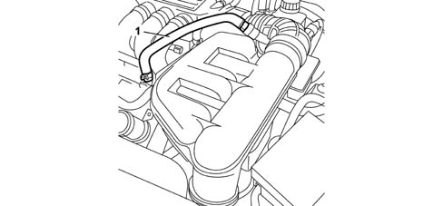

SPECIFICATIONS
- Path
- Descriptions > 10 ENGINE > 1080 EMISSION CONTROL SYSTEM > 1080D CRANKCASE VAPOUR/GAS RECIRCULATION SYSTEM > SPECIFICATIONS
- Kind
- system description
- Applies to
- engines: 3.0 V6, 3.2 V6; all production periods
- Interactive page
- https://sloeber94.github.io/elrnDB-lThss/en/#/616472
Applies to: engines: 3.0 V6, 3.2 V6; all production periods
FUNCTION
During engine operation, oil vapour frm the crankcase collect in the cylinder heads.
A portion of the oil vapours condense and fall into the crankcase. The remaining vapours are directed to the intake via pipes (1) and (2).
When idling, oil vapours flow through pipe (1). At higher loads, they flow through pipe (2).
